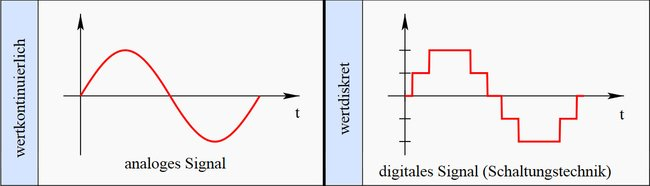
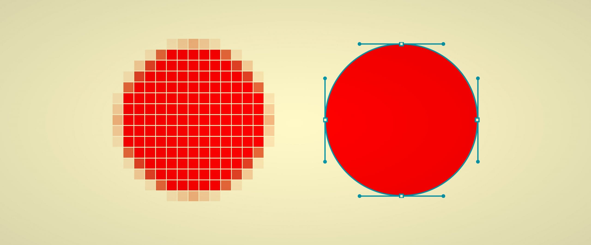

Grundlagen der Informationstechnik
Begriffe
Datenverarbeitung
| manuelle Datenverarbeitung | führt Berechnungen und Datenmanipulationen ohne Hilfsmittel durch, basiert auf Kopfrechnen und Auswendiglernen |
| mechanische Datenverarbeitung | verwendet mechanische Hilfsmittel, z.B. mechanische Schreibmaschine oder Rechenschieber |
| elektrische Datenverarbeitung | elektrisch betriebene Geräte werden als Hilfsmittel verwendet, z.B. elektrische Schreibmaschinen oder klassische Registrierkassen |
| elektronische Datenverarbeitung | verwendet elektronisch gesteuerte Arbeitsmittel, also Elektronenrechner oder Computer |
Informatik
| theoretische Informatik | betrachet insbesondere die mathematisch-logischen Grundlagen, die der Verwendung und Proigrammierung von Computern zugrunde liegen; es geht bspw um die Berechenbarkeit und um Automatentheorien - die mathematisch-formalen Modelle, auf denen Rechner unabhängig von der elektronischen Machbarkeit aufbauen; |
| technische Informatik | beschreibt die elektronisch-technischen Eigenschaften der Bauteile, aus denen Computer zusammengesetzt sind; ein wichtiges Teilgebiet der technischen Informatik ist die Schaltalgebra, die Umsetzung logischer Operationen durch elektronische Schaltungen; |
| praktische Informatik | hier geht es um Programmierung von Computern und die Mittel, die dazu erforderlich sind; die Erforschung des Aufbaus von Betriebssystemen und Programmiersprachen-Compilern sowie deren Implementierung (praktische Umsetzung) sind die wichtigsten Teilgebiete; |
| angewandte Informatik | kümmert sich um alles andere, nämlich um sämtliche Nutzanwendungen von Computern; das reicht von Datenbanken über die Netzwerkkommunikation bis hin zu Grafik, Animation und Audio-&/Videobearbeitung; |
Assembler: Name für vereinfachte Schreibweise der Maschinensprache und für das Programm selbst; beherrschen bspw Definition sog. Makros: immer wiederkehrende Abfolgen von Befehlen erhalten einen eindeutigen Namen und können dann später unter diesem Namen aufgerufen werden; Assemblersprachen werden heute noch für direkte Hardware-Manipulation, Zugriff auf spezielle Prozessoranweisungen, Verwaltung von Konstanten, Verwaltung von Adressen von Befehlen / Daten oder zur Lösung kritischer Leistungsprobleme verwendet. Nach Assembler-Definition kann die Übersetzung also ganz zielgerecht an kritischen Stellen eingesetzt werden. Des Weiteren können Assembler zur Optimierung der Verarbeitungsgeschwindigkeit oder zur Optimierung der Programmgröße verwendet werden;
Interpreter: übersetzt den Quellcode Zeile für Zeile; der Code wird also während der Ausführung (zur Laufzeit) übersetzt. Interpretierte Sprachen werden häufig auch als Skriptsprachen bezeichnet;
Compiler: rzeugt ein dauerhaft lauffähiges Maschinensprachprogramm und speichert es als ausführbares Programm ab;
Just-in-Time-Compiler: übersetzen die Skriptsprache, bevor das Programm ausgeführ wird und der entstandene Byte-Code wird oftmals in einem Cache zwischengespeichert;
Byte-Code: kann als Programm auf unterschiedlicher Hardware ausgeführt werden;
Arten von Programmiersprachen
imperative oder prozedurale Programmiersprachen
C oder Pascal; erlauben eine Strukturierung/ Modularisierung
objektorientierte Programmiersprachen
Smalltalk, C++, Java, C#; werden in wiederverwendbaren Paketen programmiert, den sogenannten Klassen; Eine Klasse ist eine allgemeine Vorlage für die Konstruktion von Objekten. Ein Objekt ist eine Datenstruktur, die selbst Funktionen enthält, um sich auf die gewünschte Art und Weise zu verhalten.
Vorteile
- Kapselung: Datenstrukturen außerhalb eines Objekts können nicht direkt dessen innere Daten manipulieren, sondern nur seine offiziellen Methoden (Schnittstellen nach außen) benutzen. Dies sorgt für ein klares Programmdesign und schützt vor vielen Fehlern.
- Vererbung: Klassen können ihre Eigenschaften und Methoden an "Kindklassen" abgeben, in denen nur noch die Unterschiede programmiert werden müssen. Dies beschleunigt die Softwareentwicklung und macht Programme noch einmal erheblich übersichtlicher.
Die wichtigsten OOPS
-
Smalltalk: war die erste vollständig objektorientierte Sprache überhaupt. Sie wurde in den 70er-Jahren zur Programmierung der ersten grafischen Benutzeroberfläche entwickelt.
-
C++: ist die objektorientierte Erweiterung der Programmiersprache C und wurde von Bjarne Stroustrup entwickelt. Da C++ abwärtskompatibel mit C ist, wurde die Sprache bald von C-Programmierern eingesetzt; ihre besonderen Vorteile als objektorientierte Sprache wurden aber erst langsam angenommen.
-
Java: besitzt vor allem die Besonderheit, dass es sich um eine plattformunabhängige Sprache handelt. Sie brauchen ein Java-Programm nur einmal zu kompilieren, es läuft innerhalb eines speziellen Programms für die verschiedenen Plattformen, der virtuellen Java-Maschine (JVM).
-
C#: ist eine OOPS von Microsoft. Es handelt sich um eine der Sprachen, mit denen Anwendungen für das .NET Framework entwickelt werden können. Zwar betont Microsoft aus Marketingerwägungen stets die Verwandtschaft mit C++, aber dennoch hat C# mehr mit Java gemeinsam als mt C++.
Logische Programmiersprachen
LISP, Prolog, Logo;
Die Grundidee besteht darin, nicht den fertigen Algorithmus einzutippen und mit wechselnden Wertbelegungen vom Computer berechnen zu lassen, sondern das Grundproblem selbst zu formulieren und die Erzeugung einer möglichst optimalen Lösung dem Compiler zu überlassen. Logische Programmierung ist ein Programmierparadigma, das auf der mathematischen Logik beruht. Logische Sprachen verwenden die Prädikatenlogik zur Formulierung von Ausdrücken oder Termen; der wichtigste Vertreter ist Prolog.
Funktionale Sprachen
Sprachen mit ähnlichem Ansatz, aber anderer Syntax werden auch als funktionale Sprachen bezeichnet. Dazu gehört vor allem LISP, aber auch die Sprache Logo, die hauptsächlich entworfen wurde, um Kindern die Denkweise der Computerprogrammierung beizubringen. Als gemeinsamen Oberbegriff verwendet man manchmal die Bezeichnung deklarative Programmiersprachen.
Multiparadigmen-Sprache
Ruby, Python;
enthält neben funktionalen auch objektorientierte und imperative Aspekte;
Digitale Speicherung und Verarbeitung von Informationen
Digital sind Informationen immer dann, wenn sie in Form von Zahlen dargestellt werden können.
Genauer gesagt, werden die Daten binär gespeichert, also als Abfolge von Einsen und Nullen. Das ist nicht genau dasselbe wie dual. Das Dualsystem ist das mathematische Zweiersystem, während binär allgemein die Speicherung beliebiger Daten durch zwei verschiedene Zustände bezeichnet.
Analogdaten werden als Welle dargestellt, digitale Daten dagegen durch eine rechteckige Form.

In der Mathematik werden Objekte mit einem solchen "Mindestabstand" als diskrete Mengen bezeichnet. Ein Alltagsbeispiel ist die Folge der ganzen Zahlen - im Unterschied zu den rationalen oder gar reellen Zahlen, bei denen zwischen zwei beliebigen Elementen immer noch unendlich viele Zwischenwerte liegen.
Die Umwandlung der analogen Eindrücke aus der Realität in computergeeignete digitale Daten wird als "Digitalisierung" bezeichnet. Je nach Datenart wird sie zum Beispiel von einem Scanner oder einer Digitalkamera bei Bildern oder von einer Soundkarte bei Tönen durchgeführt.
Digitale Bilddaten
Pixelgrafik
auch Bitmap-Grafik genannt, speichert ein Bild als rechteckiges Raster quadratischer Farbinformationen ab, den sogenannten Pixeln.
Vektorgrafik
speichert Umrisslinien und Kurven von Zeichnungen in Form mathematischer Formeln.

Charakter eines Pixelbildes
Auflösung
ppi - Pixel per inch; Für Druck sollte die Auflösungen etwa 300 ppi haben, für eine digitale Anzeige ca. 72 ppi;
Farbtiefe
Wie viele Bits werden zur Speicherung der Informationen eines Pixels verwendet. Je nach Farbtiefe kann eine bestimmte Anzahl verschiedener Farben eingesetzt werden. Beispielsweise ermöglicht eine Farbtiefe von 8 Bit nur 256 verschiedene Farben, 16 Bit bieten 65.536 Farben und 24 Bit sogar mehr als 16,7 Millionen.
Farbkanäle
- additive Farbmischung (RGB)
- subtraktive Mischung (CMYK) Für die Intensität jeder einzelnen Grundfarbe wird ein Farbkanal gespeichert. Die Farbtiefe wird dann pro Kanal angegeben, bei einem RGB-Bild mit 24 Bit Farbtiefe also beispielsweise 8 Bit (oder 256 Intensitätsstufen) pro Kanal.